THIRUVANANTHAPURAM

About Thiruvananthapuram
Thiruvananthapuram, the capital of Kerala, is a perfect mix of heritage, culture, and scenic beauty. Home to the Padmanabhaswamy Temple, Kovalam Beach, and Napier Museum, this city offers something for every traveler.
Thiruvananthapuram at a Glance
Famous For: Temples, Beaches, Museums, History
District: Thiruvananthapuram
Best Season to Visit: October – March
Weather: Summer 27-35°C, Winter 22-30°C
How to Reach Thiruvananthapuram
By Air
The Trivandrum International Airport (TRV) is well connected to major domestic and international destinations.
By Train
Thiruvananthapuram Central Railway Station is a major railway hub in South India.
By Road
The city is connected through NH-66 and NH-544, making road travel convenient.
Top Attractions in Thiruvananthapuram
Padmanabhaswamy Temple

One of the richest temples in the world, dedicated to Lord Vishnu, famous for its Dravidian architecture and hidden treasures.
IMAGES GALLERY:

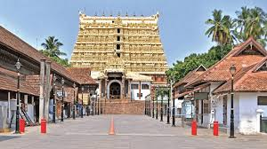


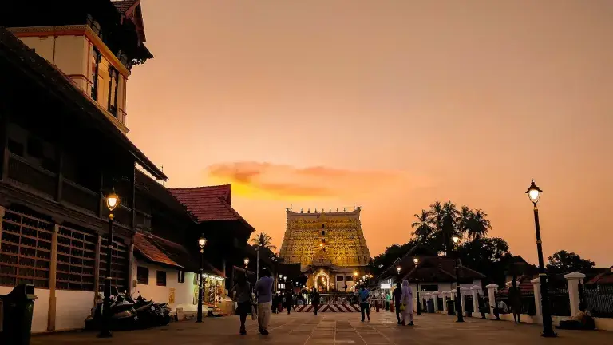

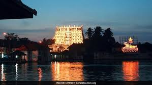
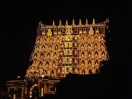
VIDEOS GALLERY:
Here is a vedio that might help you understand more;
Kovalam Beach

A world-famous beach destination offering golden sands, water sports, and Ayurvedic resorts.
IMAGES GALLERY:


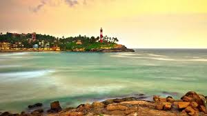
VIDEOS GALLERY:
Here is a vedio that might help you understand more;
Napier Museum

A historical museum showcasing Kerala’s rich cultural heritage, art, and royal collections.
IMAGES GALLERY:
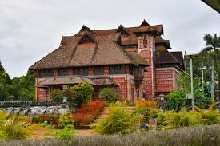
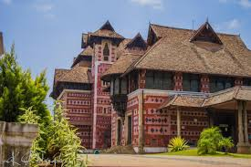

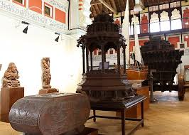
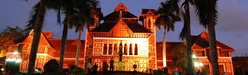
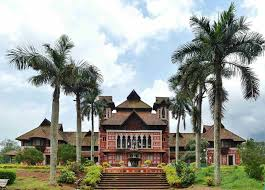
VIDEOS GALLERY:
Here is a vedio that might help you understand more;
Poovar Island
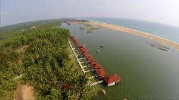
An untouched paradise where rivers, sea, and backwaters meet, offering boat rides through mangrove forests.
IMAGES GALLERY:
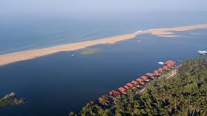
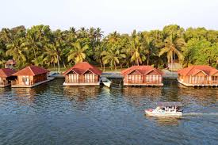
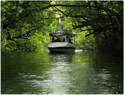
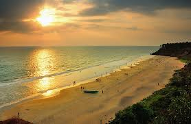
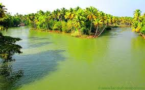
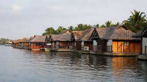
VIDEOS GALLERY:
Here is a vedio that might help you understand more;
Must-Try Restaurants in Thiruvananthapuram
- Villa Maya
- Zam Zam
- Mother’s Veg Plaza
- Ariya Nivaas
Best Places for Shopping
- MG Road
- Connemara Market
- Chalai Bazaar
- Attukal Shopping Complex